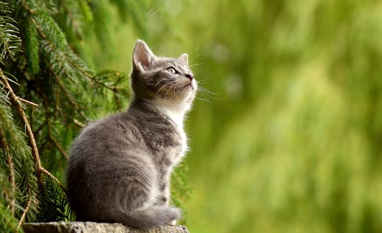

El 4 de octubre se celebra el Día Mundial de los Animales ,
una fecha promovida por la Organización Mundial de Protección Animal,
con el objetivo de frenar la extinción de muchas especies a lo largo y ancho del mundo.
Se eligió este día en particular por coincidir con el santo de los animales San Francisco de Asís,
quién en vida considero que todos los seres que habitamos la tierra somos criaturas de Dios.
Se eligió este día en particular por coincidir con el santo de los animales San Francisco de Asís,
quién en vida considero que todos los seres que habitamos la tierra somos criaturas de Dios.
En el año 1980 el Papa Juan Pablo II, declaró a San Francisco de Asís patrono de los animales,
acción que popularizó la celebración de este día, porque cada año, millones de católicos
se congregan junto con sus mascotas en las iglesias para que estas reciban la Bendición de las Mascotas.
¿Por qué celebrar un Día Mundial de los Animales?
Todos los Animales y el medio Ambiente

fig2.-Todos los animales y el medio Ambiente
Aunque usted no lo crea, por el año 1200, cuando San francisco de Asís era apenas un muchacho,
él dijo que debemos comprender cuál es nuestro lugar en la Tierra, ya que el bienestar de nosotros
está integrado al bienestar de todos los animales y el medio ambiente. Sus palabras,
no fueron comprendidas para nada en aquella época, pero actualmente todos los seres humanos sabemos a ciencia cierta,
cuan sabia y premonitoria, fue aquella frase.
¿Cómo podemos celebrar este día?
conciencien al resto de los usuarios de Internet
fig3.-Conciencia a los usuarios de Internet
La mejor forma de celebrar este día, es respetando a todos los seres vivos que conviven con nosotros en el planeta.
También asistiendo o realizando actividades educativas que promuevan en las generaciones más jóvenes un sano interés
por nuestros amigos los animales.
Otra excelente manera, es compartiendo mensajes que sensibilicen y conciencien al resto de los usuarios de Internet,
sobre los seres peludos, con plumas o escamas, que viven a nuestro alrededor, pero que no cuentan con conexión wifi
para levantar su voz a favor de sus derechos.